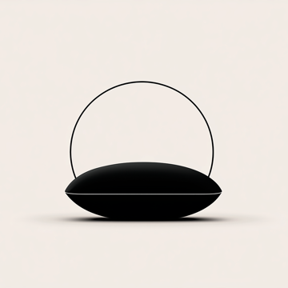

A quiet meditation timer
Zafu Timer is an app for iPhone and iPad with one screen and nothing to learn.
Choose a length from 1 to 60 minutes. Choose whether a bell marks the sit or nothing sounds at all. Press BEGIN and put the phone down. Fifteen seconds of settling give you time to find your posture, and then the sit begins.
- In bell mode a bell opens and closes the sit, also with the phone locked and the Ring/Silent switch set to silent.
- In silent mode nothing sounds and nothing vibrates. The screen shows that the sit has ended.
- The countdown is shown on the Lock Screen while you sit.
- There is no account, no statistics, no adverts and no network connection. The app collects no data.
A zafu is the round cushion used for sitting meditation.